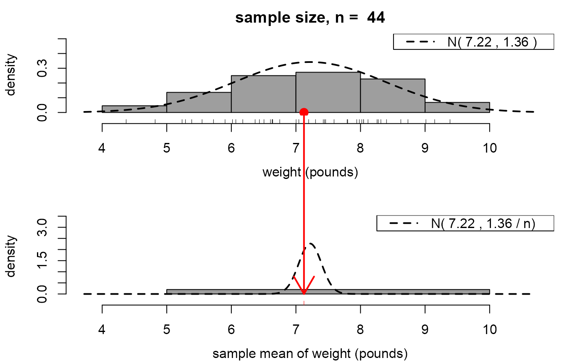

A movie to illustrate the ideas of a sampling distribution of a random variable and the central limit theorem (CLT). In this case (based on random samples from a normal distribution) the CLT provides an exact result.
clt_normal_movie( n = 30, mu = 0, sigma = 1, xlab = "x", pos = 1, envir = as.environment(pos) )
| n | An integer scalar. The size of the samples drawn from a normal distribution. |
|---|---|
| mu, sigma | Numeric scalars. The respective mean and standard
deviation of the normal distribution from which data are to be
simulated using |
| xlab | A character scalar. A name to use to label the horizontal axis of the plots. |
| pos | A numeric integer. Used in calls to |
| envir | An alternative way (to |
Nothing is returned, only the animation is produced.
Loosely speaking, a consequence of the Central Limit Theorem (CLT) is that, in many situations, the mean of a large number of independent random variables has approximately a normal distribution, even if these original variables are not normally distributed.
This movie illustrates this in the very special case where the original
variables are normally distributed. Samples of size n
are repeatedly simulated from a normal distribution. These samples are
summarized using a histogram that appears at the top of the movie screen.
For each sample the mean of these n values is calculated, stored
and added to another histogram plotted below the first histogram.
The respective probability density functions (p.d.f.s) of the original
variables and the means are superimposed on these histograms.
The latter is know to be exactly a normal p.d.f. in this special case.
The user may choose the sample size n, that is, the number of
values over which a mean is calculated, the mean mu and/or
standard deviation sigma of the normal distribution from which
values are simulated and the label xlab for the horizontal axis.
Once it starts, two aspects of this movie are controlled by the user. Firstly, there are buttons to increase (+) or decrease (-) the sample size, that is, the number of values over which a mean is calculated. Then there is a button labelled "simulate another sample of size n". Each time this button is clicked a new sample is simulated and its sample mean added to the bottom histogram.
Another movie (clt_exponential_movie) illustrates the CLT
in the case where the original variables are exponentially distributed.
movies: general information about the movies.
clt_exponential_movie: a similar movie using data
simulated from an exponential distribution.
